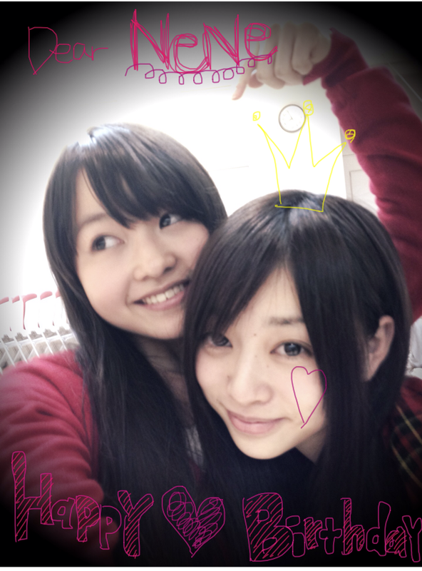
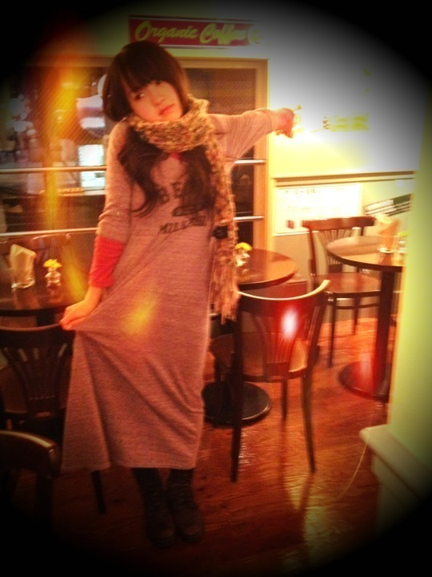
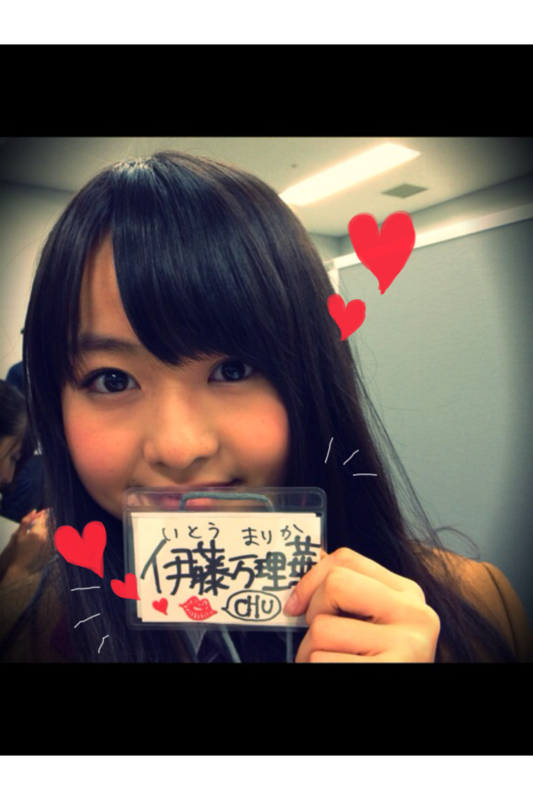
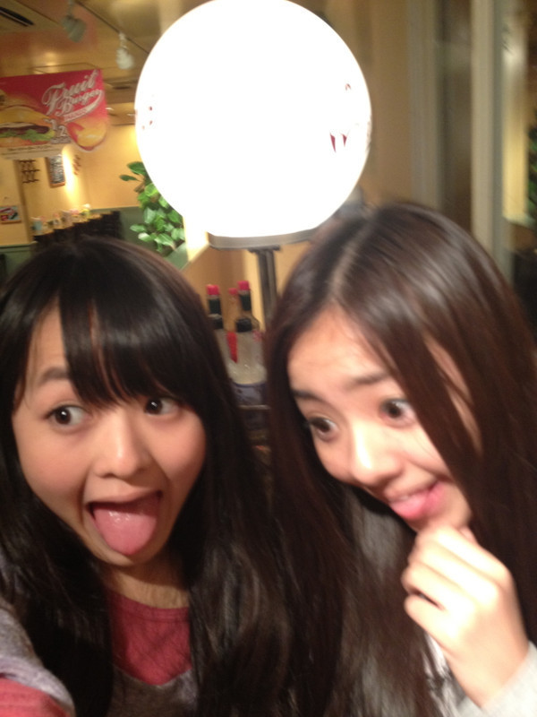
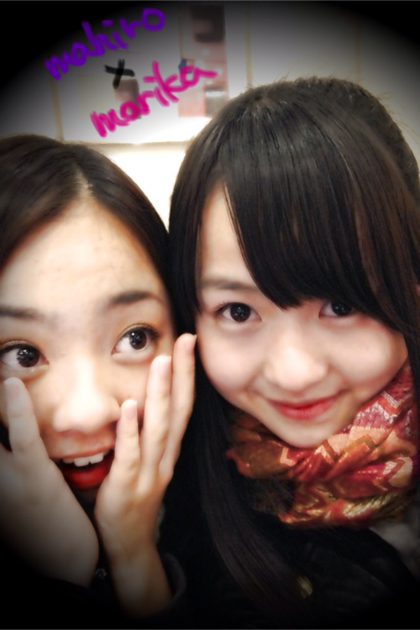
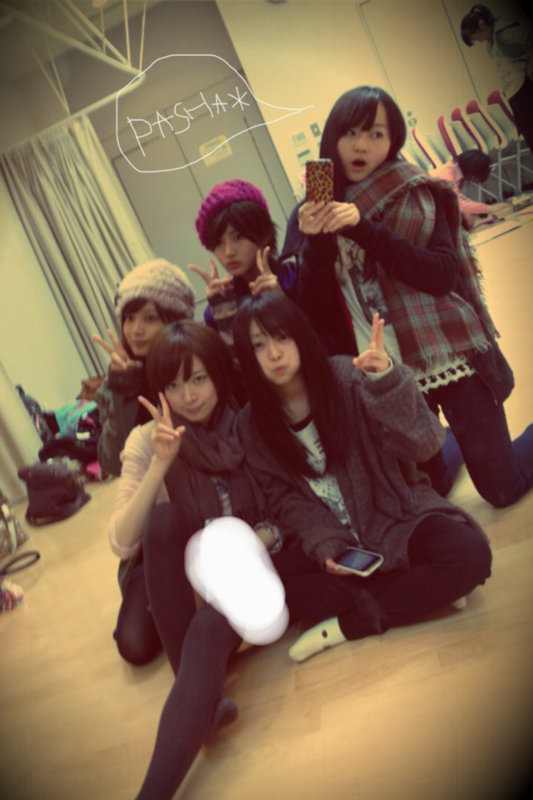

2011/1214Wed26回目*marika
BloG更新遅くなりました><
マリオカートを略してマリカーだから
それでからかわれたことのある
まりかよ。ベビたんよ。にしし
いつも読んでくださってる方、
初めて読んでくださった方、
コメントしてるださった方、
ありがとうございます♪
今日はさゆにゃん、とまたん
*****HaPPy BirThDAy*****
プリキュアみたいに2人とも
めちゃくちゃCutE*で癒しです。
どっちも話し方がかわゆい。
そのポケッとした感じがまたい～わ～♡♡
さゆにゃんとは
オーディションの時から仲良しなのよ!
お人形さんみたい^^
ドーナツとパンだいすきね＊
とまたんは、メンバーに
最近よくまねされるのよ~笑＊
みんなちゃんと
とまとの特徴つかんでて上手い‼
私の『ベビたん』てあだ名を
生み出してくれた私の親です←
本当におめでとう♪♪
白とピンクの似合う2人だいすきよ^^*
これからこれから
Lessonいってきます♪
はい。いってらっしゃい。
さっき真洋の記事読んだけど…
なんやあれ‼…うれしすぎるやないの‼
今日Lesson終わったら
もっかい更新しよっと!
ベビたん*****bA by marika
2011/1213Tue25回目*marika
いつも読んでくださる方、
初めて読んでくださった方、
コメントしてくださった方、
ありがとうございます><
*****HaPPy BirtHDay*****
ねねころりん♡2011.12.12
おめでたおめでた!!!
伊藤ちゃんずのねね、おめでとう*＊。
ねねの誕生日をお祝いできて
私も幸せです。
サバサバしてるのに
私に甘えてくるの
いつもきゅんきゅんなの♡♡
そしてやさしいの。
あほな私をしっかりツッコんでくれます。
これからもすかさずツッコんでね^^笑
身長は伸びないでっ←
そのままのねねがすきっ
本当におめでとう!

いじられたらいじり返す
いっつもそうよね＊
NeNe ♡*.＊°+。*.
モーターショーでの握手会の感想
ありがとうございました!!
みなさん、本当にお疲れ様でした~!
コメントでのペンネームを
言ってくださった方...!!
あっっ!!!!!!
ってすぐ分かりました。えへ
いつもありがとうございます**
みなさん毎日忙しいと思うのに
コメントしてくださって; ;
忙しいときは無理しないでください。
私もマイペースにいきますので=3
みなさんが読んでくださるだけでも
うれしいですほんとに。
初めてコメントしてくださった方も
沢山!!うれしすぎる..........!!きゃ-
モーターショーで
握手できなかったとしても
いつも来てくださる方!
私が
「あっ!」
って言ったら
気づいてるんです^^*
優しさのオーラ...!!う-れ-し-い----
オーラってどんなんやろ?
良いオーラが出てますように...!!
モーターショーでもらった
お手紙!!
今日読みました><
プレゼントも!!かわいい!!
めっちゃうれしい♡
にやけてまうやないか--------い///
毎日BloGをチェックしてくださってるんだ***
....とほっこりしました。ほかほか~
前回の真洋とのしゃしんですね笑
ツッコんでくれた!
ってうれしかったです。
あれ、変顔のつもりで
載っけたんと違いますよ!笑
でもあとであのしゃしんよく見たら....
あ。これ、変顔だな。。
って思いました。←ぇぇー
あれは何か見ての顔でもなくて
連続写真でめっちゃ顔動かそか!ってゆって
撮ったらいい感じにおもろかったので
載せてしまいました。
みなさん急に変顔載せてきて
びっくりしたと思います。笑
何を話したかって??
.......
GiRLs TalK☆
ですよ**
私服!

milkfedのマキシ♡
らーくちーん
質問はまた今度返します:)
寒さ対策して明日も一日頑張りましょう*

LOVE
ベビたん*****bA by marika
2011/1211Sun24回目*marika
ベビたんですこんばんわ。
いつも読んでくださってる方、
初めて読んでくださった方、
コメントしてくださった方、
ありがとうございます!**
今日は東京モーターショーで握手会でした^^!!
沢山の方にお集りいただいて
めっちゃ感激でした!!
長い間待っていただいて
本当にありがとうございました!!
みなさんとお話できて本当によかったです*
私は青レーンでした=3
「ベビたん」
「ブログ読んでるよ」
って、沢山の方が言ってくださって
めちゃくちゃうれしかったです♡
ほめられたらめっちゃ照れてしまって
対応が悪くて反省しています...
ぎこちなくてすみませんでした~;;;;
プレゼントありがとうございました---!!!!!!!!
うれしいことばっかりやーもう!＊
握手できなかった方、残念です-。
でも、次のイベントで握手できる機会があれば
沢山お話ししましょう---☆☆

...........................
・何をやってる時にテンションが一番上がるの？
答えるの遅くなってしまってすみませんでした;(...
メンバーや仲良い友達と
はしゃいでる時が自分めっちゃ
テンション高山ってるって思います。
高山ってる時は
げらげら大笑いしてるんですよ笑
あと、
好きな所で1人で買い物してる時、
密かにテンション高山~~~!←
・焼き肉だとどこのお肉が好き？
タン♡
カルビ♡
・今一番食べたい鍋料理は何？
最近我が家では
豚と白菜のミルフィーユ鍋が流行りで!!
CMでもやってる**
レタス鍋も好きです。
(レタス一枚ずつしゃぶしゃぶして、
ミョウガ,ネギ,生姜のぽんずダレでたべるやつ)
キムチ鍋もだいすき-♡
こりゃんめぇです!!
ぜひ作ってみてください。
・写メって、待ち受けにしてもいい？
お気に入りが見つかったならぜひ!!
ありがとうございます＊!
自分の載せたのが待ち受けになるって
めっちゃうれしいですよ><
・ろってぃと撮った時に巻いてるマフラー
どこで買ったやつ？
かわいいですよね----♡
趣味合いますねぇ^^にやにや←
これママのおさがりのなんですよ-!
聞いたけど忘れたみたいで....
わかったら教えますね**
・ペット飼ってる？
昔ハムちゃん飼ってましたよ!!
２匹!!!
ラッキーちゃんとハッピーちゃん。
・まりりの周りには12/12生まれの子いる？
明日ですね＊...ってもうすぐや=3
ねねもそうやし.......
もう１人中学の頃の親友もです!!
2人や---＊。*+°
・画像はメール添付機能で載せられないの？
わかりません; ;
ごめんなさい!
パソコンでやってるんですけど
どうやってやるやろ.....
・モケケって何？
手の長いキャラクターです**
たぶん癒し系((笑
くわしくはモケケだいすき
せいらに聞いてください!!
...........................
あんな!!
今日も真洋と帰りご飯行ってん***!!
げらげら大笑いして
テンション高山やった♡
真洋とはいっつも笑い合ってるねん。
うふふふ
いひひひ...
うひひひ.....
てね笑
笑い合いすぎて
スタッフさんに気持ちわるいてゆわれてしもたな笑

またクリスマスのイベントで元気な姿を
みなさんにお見せします☆*
風邪に気ぃつけましょうね!!
明日も元気に頑張ろう***

LOVE
ベビたん*****bA by marika
2011/1211Sun23回目*marika
こんばんわ☆
ベビたんだよ。まりかだよ。
いつも読んでくださってる方、
初めて読んでくださった方、
コメントしてくださった方、
ありがとうございます♡
今日は初めてケータイから投稿します‼
で、ケータイから写真の載せ方わからんので
今日はなーしでゎす…泣
ごめんなさい。
はい！
今日もお仕事がありました~~><
お疲れ様や***
今日、やっと清羅に誕プレ渡した‼
遅なってごめんな!
やっぱりモケケ笑
明日はついにモーターショーです‼
やっとみなさんに会える~♡
でも握手できるかわからんね。
でも会えるだけで嬉しいから!*
とにかくとにかく
めちゃくちゃ
楽しみにしてます☆
そういえば、
bombは見ましたか⁇
ゆったんたんと2ショットです´ ` ♡
初めて大きく載れてめちゃうれしいです。
見てない方は、cHecKしてみてね^^
あー><
載せたいしゃしんいっぱいあるのに
載せ方を知らんの、い"ーーーーってなる‼←
今日はこれだけや!
内容薄くてごめんなさい。
しかも、質問答えられなくて…泣
昨日の記事は無駄に長くて、
でもみなさん読んでくださって…
めっちゃ優しいです。
みなさんのコメントは
欠かさず読んでますよ♡‼
本当にいつもありがとうの言葉しかないです。
いつも元気もらってます。
コメント読んでたら笑っちゃうもん。
ありがとう‼
時々質問を答えるの忘れてしまって
本当にすみません;(!!
また答えられてなかったりしたら
コメントで言ってください‼
よろしくお願いします-------!!***
だいすきです♡♡
こんな記事だけど、
コメント待ってるよ＊
LOVE
ベビたん*****bA by marika
2011/1209Fri22回目*marika
やぁやぁ!!
いつも読んでくださってる方、
初めて読んでくださった方、
コメントしてくださった方、
ありがとうございます♪♪♪
万理華です。←今日は漢字´ `
今日は朝からお仕事ありました。
福岡メンバー明日がんばって^^*!!!
今日めっっっっっちゃ寒いですね
マフラーぐるぐる巻きやった。笑
貧血の心配ありがとうございました。
ほうれん草も食べよう○!!
気ぃつけます‼はい
最近スムーズに更新できて
かいててもとても楽しいです。
みなさんが私のBloGで
楽しんでいただけたら幸いです。
....あっ、これこの前も似たようなの言うたな笑
(大人ぶりたい年頃なんです←)
＊＊＊
読んでいただいて
私は幸せです!!
読んでくれてありがとうっ=33
昨日部屋掃除しました。
きれいなった＊°+。*
いいね。部屋きれいやと:D!!
空気すっきり気分すっきり
えへえへ
聞いて!
今日ねねころと駅で
待ち合わせしよってことになって
駅で次の電車待ちながら
何時頃着くかメール打って送ったら
ねねが『おんなじ時間に着く(笑)』
って返ってきて....
そんで
「へぇーそうなんや、ほー」
って考えてたら、いきなり肩叩かれて
「あっ、メンバーかな？」
って思って振り返ったら
ねねころ。
........おったんかい!!!!!
終わり(笑)
.........................
今日も質問答えます***
・ディズニーキャラクターなにがすき？
ディズニーランド行くんですか♡?
いいな.....
お土産........!!!!!!!いいんですか--??!
もう、気持ちだけでじゅうぶんうれしいですよ-*
好きなキャラクターは
ミッキー、ミニー、バンビ、ダンボかな♪
・街でだいぶ声をかけられるようになった？
だいぶ...
以前に1回も声かけられたことないです笑
きっぱり!
・今年やり残したこと、
今年中にやっておきたいことはある？
別腹でなくなるようする.....!
今年中にコート買いたい!!
京都のおばあちゃん家に行きたい!
大阪の友達に会いたい!
もう着ない服とさよならする!
・雑貨マニア？
YES!!!!!!←←
レトロでカラフルなのだいすきです♡♡
・乃木坂はakbみたいに恋愛禁止条はあるの？
akbさんと一緒だと思います!*
本当に忙しくなったら
恋愛なんてできないだろうな。
＊フェレットちゃんの名前!
センスないですけど
はすちゃん
はぐちゃん
はにちゃん
なぜか思い浮かぶのが『は』からです＊笑
.........................
今日いちばんじゃれた真洋と**
今日も上に乗っかった。
したら真洋も乗っかってきた笑
Lesson終わった後
真洋とめっちゃしゃべった------------

-----ありがとう♡*
真洋だいすきや><
今日は気分的にまひろって呼ぶ笑
今度やきにく行こか^^*

最近Lesson帰りに撮ったしゃしん載せちゃうで:)
PASHA＊
さりげなく私服。
今ケーブルTVで
「パコと魔法の絵本」見てます＊*
この映画だいすき---♡
こういう世界観すき!
内容もすき!
衣装、メイク、小物、背景がツボ!!
私服ほめてくださってありがとうございます。
かき忘れたけどあの黒のムートンブーツは
1000yenです!!!!!!
やっそいやっそい*****
しゃしんはパパ撮ってくれますで!!
いつもありがとうね^^
あとね!
大阪に住んでたのは短いですけど
パパとかお兄ちゃんが
今でもおもいっきし関西弁やから
私もなまってしまうんです。
笑
私の特徴っていうことで＊笑
今週の日曜日は東京モーターショーですね*
うっきうっき
わっくわっく
みなさんに早く会いたいです♡
直接感謝の気持ちを伝えたい--------!!!!!
私の列に来るように願ってます^^*!
絶対絶対来てねっ
来れない方はクリスマスのイベントで会いましょう♡＊
風邪ひかないでね。
ChUu
LOVE
ベビたん*****bA by marika